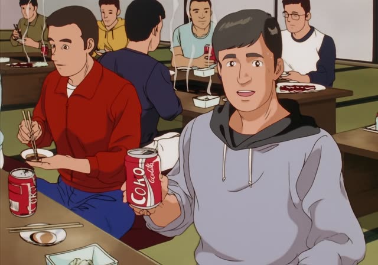
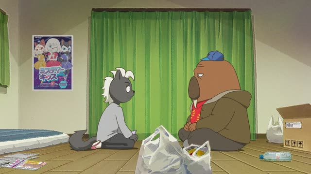

～ても
Noun or な-adjective? Add で. Verb or い-adjective? Use the て-form. Then も.
| Word | Add | Ending | ||
|---|---|---|---|---|
| Noun | 学生 | で | も | Even if I'm a student |
| な-adjective | 静か | で | も | Even if it's quiet |
| Verb | 行って | – | も | Even if I go |
| い-adjective | 高くて | – | も | Even if it's expensive |
Kekkon Dekinai Otoko · Episode 1
あとで泣きついてきても知りませんよ。
"Even if you come crying to me later, it's not my problem."
～ても means "even if": the first part happens, and the second part still stays the same. Take the て-form and add も: 来て → 来ても, 高くて → 高くても.
On this card, Kuwano warns someone who won't listen: even if you come crying later, I won't help. 知りません makes it polite.
After a noun or a な-adjective, it's でも: 学生でも, "even if (you're) a student".
Shirokuma Cafe · Episode 6
いや…行ってもたぶん変わらない。
"Nah... even if I go, it probably won't change." [going to a tanning salon]
On this card, Grizzly tells Shirokuma to go get a tan. Shirokuma says even if he goes, he'll stay white. 行く → 行って → 行っても.
Quick Examples
Your friend says it might rain on the picnic.
雨が降っても行くよ。
"I'm going even if it rains."
CasualA coworker offers to help with your heavy box.
重くても大丈夫です。
"It's fine, even if it's heavy."
い-adjective: 重い → 重くて → 重くても.
PoliteYour kid wants to skip practice.
雨でも練習はあるよ。
"There's practice even if it rains."
After a noun: でも.
CasualYou can't remember a word.
何度聞いても忘れちゃいます。
"Even if I hear it again and again, I forget it."
PoliteWith and without
雨が降ったら、行かない。
"If it rains, I won't go." Rain changes the plan.
雨が降っても、行く。
"Even if it rains, I'll go." Rain changes nothing.
Examples from Media
Quartet · Episode 10
仕事もないし、これ以上続けても意味がありません。
"There's no work, and even if we keep going, there's no point."

Oishinbo · Episode 49
無農薬農法をしても意味がないですね。
"Even if you farm without pesticides, there's no point."
The fertilizer itself has pesticides in it.
Midnight Diner: Tokyo Stories · Season 2, Episode 7
売れても幸せにはなれないんですね。
"Even if you sell well, you can't be happy, huh."
About a manga artist who got famous.

Odd Taxi · Episode 10
失っても、これまでどおりの生活に戻るだけです。
"Even if I lose it, I'll just go back to life as it was."
About money he never had to begin with.
Good Morning Call · Episode 13
ウソついても仕方ねえだろ。
"No point lying, even if I wanted to."
～ても仕方ない = there's no point (even if you do it).
Kotaro Lives Alone · Episode 6
コタロー君に聞いても答えてくれなくて。
"Even when I ask Kotaro, he won't answer."
ても also works for things that keep happening: "even when".
Dungeon Meshi · Episode 2
わなに使われてもおかしくはない。
"It wouldn't be strange even if it was used for a trap."
～てもおかしくない = it wouldn't be strange if...
Vinland Saga · Episode 14
うわ～ん！左手にはめてもすてき！
"Waah! It looks great even on my left hand!"